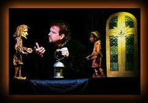
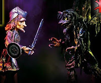
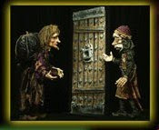

EASTER, 2011! REJOICE!
4/24/2011
{kind=link}

{kind=link}

Colorado offers many great sights and events for both residents and tourists. But if you are a fan of puppets, and you visit our state without visiting The Simpich Showcase Marionette Theatre in Colorado Springs, you will have missed one of the top Rocky Mountain experiences! Don't let that happen! It is Live Puppet Theater at it's very best.All shows are Designed and Performed by artist puppet master, David Simpich, at the Showcase Theater, 2413 W. Colorado Ave. in historic Old Colorado City. This past Wednesday, Adelia and I, plus granddaughters, Nicole and Hannah, enjoyed the unique and moving dramatic presentation by David of The Pilgrim's Progress.
{kind=link}

Using some 30 marionettes, all exquisitely designed and built by David, and each a work of art in themselves, David brought this classic work to life before the audience that filled the seats of his intimate threater. We watched and listened as the traveler, Christian, set out on his dangerous journey toward the Celestial City. Each character speaks with its own unique voice and personality - all voices performed live by the puppet master as he skillfully provides life and movement to the puppets! The two hours of dramatic onstage intrigue and adventure seemed to pass in half that time! A appropriate presentation for any time of the year, but especially so this Easter week.
The Simpich Summer Season 2011 will consist of Hansel and Gretel (June 10 - August 6), and Portraits: A Gallery On Strings (August 12 - September 9). For more information, click here: Simpich Showcase
{kind=link}